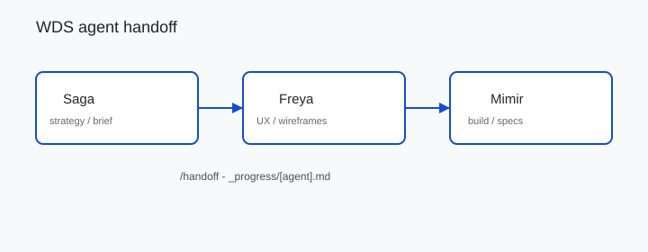

Adapt the Saga → Freya → Mimir chain for your team’s agent names.
Toolkits / Build
Walkthrough
WDS Saga → Freya → Mimir handoff
Run the Whiteport Design Studio loop: strategy in Saga, structure in Freya wireframes, implementation in Mimir - with targeted /handoff files instead of session summaries.
Prerequisites: WDS installed under _bmad/wds/ (installer creates this), Cursor rules under .cursor/rules/wds/, ~30 minutes.
After this walkthrough
You will know which WDS agent owns which phase, how to write a
/handoff to _progress/, and where wireframes and specs land for Mimir.
Start here
Confirm which agent owns which phase before you run handoffs.
Who this is for
| Role | Why run this |
|---|---|
| PM / founder | Strategy in Saga without mixing UX and code in one chat |
| Design lead | Freya wireframes and specs with clean handoff to build |
| Builder / agent practitioner | Mimir starts from _progress/mimir.md with absolute paths |
What you’ll have
- WDS under
_bmad/wds/and rules in.cursor/rules/wds/ - Product brief or trigger map from Saga
- Wireframes under
work/design/wireframes/(WDS installs may use_bmad-output/D-UX-Design/wireframes/) _progress/mimir.mdready for Mimir via/start
Why WDS
Concrete shift when design phases use targeted handoffs - not generic agile advice.
Before One long chat tries strategy, UX, and code; context degrades; Mimir re-discovers files.
After
/handoff mimir writes only what Mimir needs to _progress/mimir.md with absolute paths - fresh context per agent, less rework.
Walkthrough
Run in order. Each step lists expected output so you know before moving on.
-
Step 1
Install WDS (if needed).
cd /path/to/your/repo ./scripts/install-whiteport-design-studio.sh
Expected:.cursor/rules/wds/and_bmad/wds/config.yamlexist. See upstream WDS install docs.If it fails: Rules missing after install - re-run the script from repo root; confirm
_bmad/wds-source/submodule is present. -
Step 2
Start with Saga.
@-mention
Expected: product brief or trigger map file on disk before handing to Freya.sagarule or ask for product brief / trigger map. Output underdesign-process/or configured WDS paths.If it fails: Saga drifts into wireframes - stop and route layout work to Freya after
/handoff freya. -
Step 3
Hand off to Freya.
/handoff freya
Expected: targeted task written to_progress/freya.md- not a session wrap.If it fails: Handoff reads like a summary - include only the next task and file paths; see troubleshooting.
-
Step 4
Wireframe + spec.
Freya uses
Expected: onewireframeskill; files go towork/design/wireframes/(WDS default:_bmad-output/D-UX-Design/wireframes/). See wireframe walkthrough..excalidrawper page slug plus step markdown spec with rationale.If it fails: Annotations on canvas - move callouts to step markdown; wireframe stays structural only.
-
Step 5
Hand off to Mimir.
/handoff mimir
Expected: Mimir picks up_progress/mimir.mdvia/startwith file paths listed.If it fails: Mimir cannot find specs - handoff must use absolute paths to wireframes and step specs.
-
Step 6
Sync skills on startup.
WDS agents run
Exit: WDS skills matchsyncsilently; run manually after pulling WDS updates._bmad/wds-source/aftergit pull.If it fails: Stale WDS skills - run
syncaftergit pullin_bmad/wds-source/.
Further reading
Official WDS upstream sources. None are required beyond the walkthrough steps.
| Name | Type | Why this one | Link |
|---|---|---|---|
| whiteport-design-studio | Repo | WDS upstream source, install scripts, and agent rules | GitHub |
| Excalidraw | Tool | Open JSON wireframe format Freya uses in step 4 | excalidraw.com |
Flow diagram
Buildable structure for your repo - edit labels in Excalidraw, not in generated images.

Downloads
Take these into your repo - each file maps to a step above.
-
handoff-flow.excalidraw
Troubleshooting
Symptom → fix, tied to the step where it usually appears.
- Handoff reads like a summary. Step 3 - Include only the next task and file paths - not full session recap.
- Mimir cannot find specs. Step 5 - Handoff must use absolute paths to wireframes and step specs.
- Stale WDS skills. Step 6 - Run
syncaftergit pullin_bmad/wds-source/. - Wireframes annotated. Step 4 - Freya puts rationale in step markdown, not on canvas.
Optional on this site
Companion walkthroughs on this site. You do not need them to run the WDS loop.
Attribution. Whiteport Design Studio by whiteport-collective. Starter templates / process - adapt for your organisation. Not affiliated with WDS maintainers.